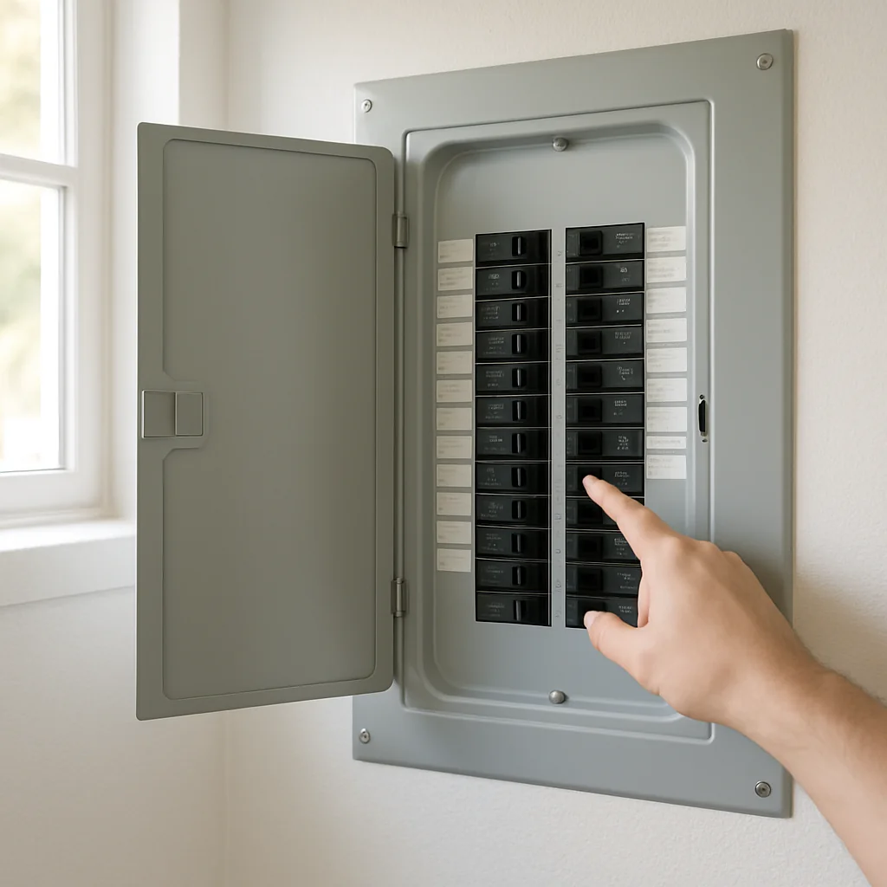
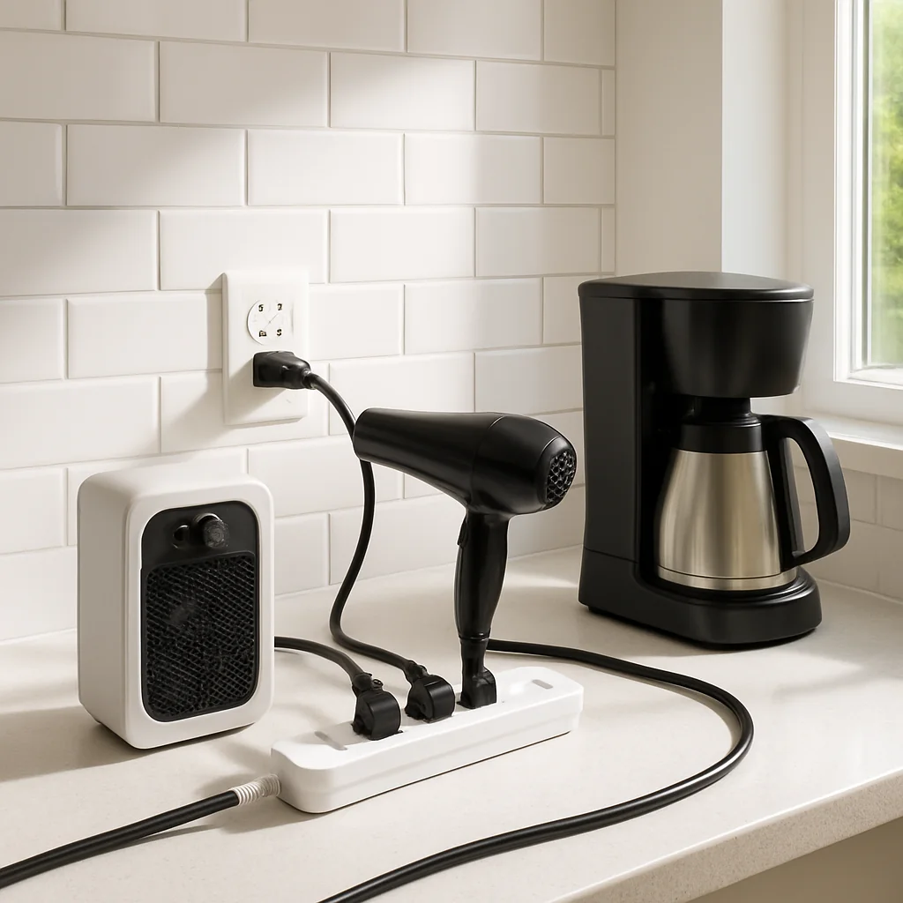
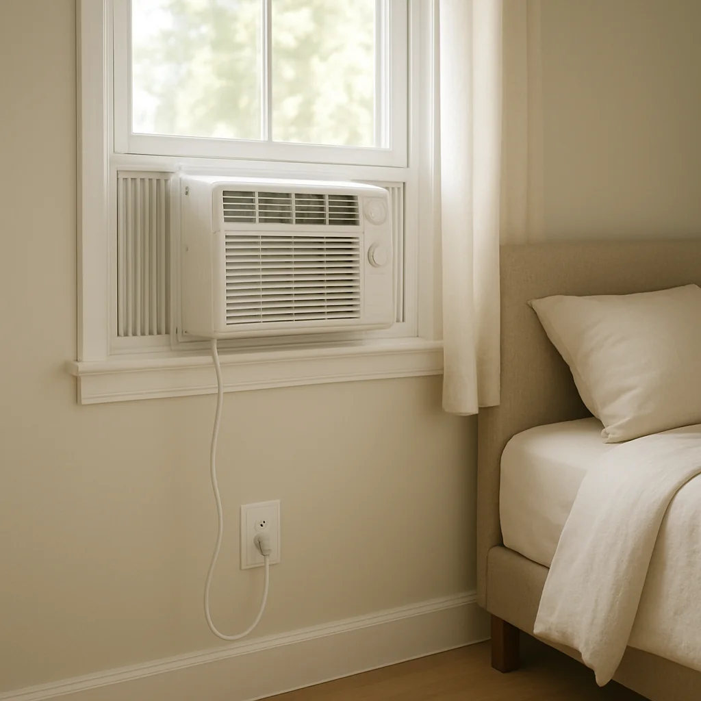
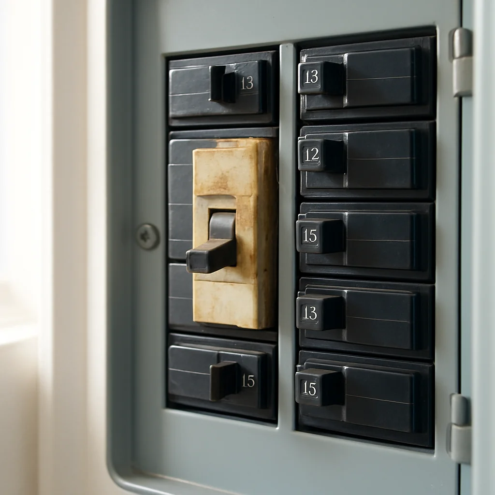

Why does my circuit breaker keep tripping?
A breaker that won't stay on isn't broken — it's working exactly the way it's supposed to, and I'll walk you through what it's trying to tell you.

What's actually happening when a breaker trips

Every breaker in your panel is a tiny guard standing watch over one circuit. If too much current flows, or current goes somewhere it shouldn't, the guard flips off the switch before a wire overheats. So a tripped breaker is a save, not a failure — the real question is which kind of save you just witnessed. In a US home, the answer is almost always one of five things.
- Overload. A single circuit is rated for 15 or 20 amps. Plug in a space heater on the same circuit as a hair dryer and a microwave and you'll cross that line in about a minute. The tell is timing — the circuit holds fine until you turn on that one extra appliance.
- Short circuit. Inside an outlet, a lamp cord, or an appliance, a hot wire is touching a neutral wire directly. Current spikes hard and fast, and the breaker snaps off in milliseconds. The tell is immediacy — it trips the instant you flip it back on, sometimes with a pop or a burnt-plastic smell.
- Ground fault or AFCI sensitivity. GFCI outlets in bathrooms, kitchens, garages, and outdoors watch for current leaking through water or a damaged appliance. AFCI breakers in bedrooms and living rooms listen for the stuttering arcs of a loose wire starting to spark inside a wall. Either one trips on the smallest hint of trouble — that's the job.
- A specific appliance is the bad actor. Old microwaves, window AC units, mini fridges, and space heaters pull a big startup surge when their motor or heating element kicks in. A failing one will push past what the circuit can hand off, every single time it cycles on.
- The breaker itself is worn out. Standard residential breakers are good for 20 to 40 years; AFCI and GFCI devices wear out closer to 10 to 15. A tired breaker trips at random — no appliance pattern, no room pattern, just nuisance trips that get worse over time.
Those are the five suspects. Next, let's narrow it down without calling anyone yet.
How to diagnose this yourself

Most breaker mysteries get solved in fifteen quiet minutes at the panel and a slow walk through the house. Here's the order I'd go in.
Start at the panel. Open the door and look for the breaker that's flipped — it'll sit slightly out of line with the others, often resting in a middle "tripped" position rather than fully OFF. Note which room or which outlets went dark when it tripped; the label on the panel door is your map, even if it's old handwriting. If more than one breaker is flipped, that's a different story and you'll want a pro — keep reading to the next section.
Now figure out which circuit you're on. Walk that room with a phone flashlight and find every outlet, every light switch, and every hardwired appliance that lost power. That whole group is your circuit, and somewhere in that group is your answer.
Next, unplug everything on the circuit — lamps, chargers, the toaster, the space heater, the window AC, all of it. Then go back to the panel and reset the breaker. Push it firmly to OFF first, then back to ON. If it holds with nothing plugged in, you've already ruled out a wall-side short or a worn-out breaker — the trouble is one of the things you just unplugged.
Now plug things back in one at a time, starting with the smallest. After each one, wait a beat. If the breaker trips when you plug in a specific lamp or cord, that lamp or cord is the bad actor — retire it or swap it out. If it trips the moment a big appliance like a space heater or window AC kicks on (not when you plug it in, but when its motor cycles), that's the startup-surge story and the appliance is asking for a circuit that can handle it.
Finally, watch for the pattern over a day or two. A breaker that holds with nothing plugged in but trips at random in normal use is leaning toward GFCI/AFCI sensitivity or a tired breaker. A breaker that trips only when one specific appliance runs is an appliance-and-circuit-sizing problem. A breaker that won't even reset is something else entirely — and that's the line where DIY stops.
When to stop and call a pro — and what a FixerUp electrician will do

Some signs aren't for diagnosing — they're for closing the panel door and picking up the phone. Stop and call an electrician same-day if you smell burning plastic, see scorch marks on a breaker or outlet, feel heat coming off the panel face, hear a buzzing or humming from one slot, see the breaker spark or refuse to reset, or if any of the trouble involves water near the panel or near an outlet. Same goes for a breaker that trips with everything unplugged, or trips at the same time every day with no pattern you can name — that means the trouble lives inside the wall, and that's not a homeowner job.
When a FixerUp verified electrician comes out, here's what the visit actually looks like. They start with a visual panel inspection — pulling the dead front cover off so they can see every lug, wire, and breaker face. They use an infrared thermometer to check each breaker's running temperature against its neighbors; a hot breaker is a dying breaker. They put a clamp meter on the suspect circuit to measure real current draw under your normal load, and an inrush reading on any appliance that's been kicking the breaker — that tells them whether the appliance, the circuit sizing, or the breaker itself is the failure. For GFCI and AFCI trips they use a plug-in tester to confirm the device is functioning, then trace which junction is leaking. Loose screw terminals get retorqued; that alone fixes a surprising number of nuisance trips.
Scope of work follows from what they find. A like-for-like breaker swap typically runs $100 to $200 installed and takes under an hour. A damaged outlet is about $15 in parts plus labor. A fuller panel tune-up — torquing every lug, replacing aged breakers, rebalancing the load — runs $100 to $300 in most US markets. If the real answer is a dedicated 20-amp circuit pulled to a heavy appliance, expect a half-day job. Your electrician will explain which of these you actually need before any work starts, and an honest pro will tell you when the answer is "nothing — just stop running the heater and the microwave together."
One more thing
If this sounds like a one-call job and you'd rather not chase down five quotes, Fixa can match you with a background-checked electrician in your area and bring you an honest price after a free home visit.